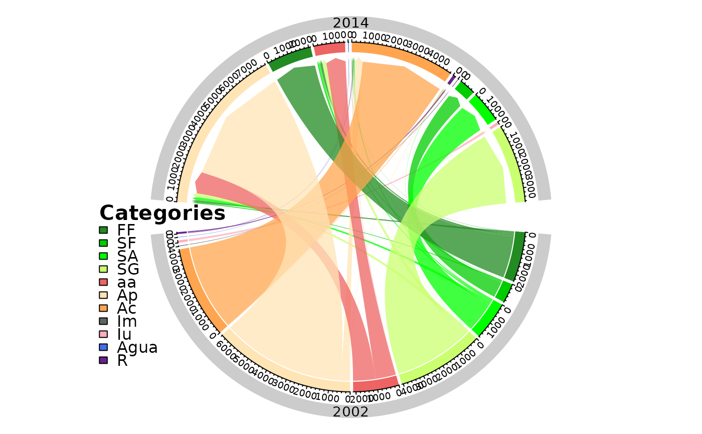

A circlize plot representing the one step transitions between two times point of interest.
Arguments
- dataset
A table of the one step transition (
lulc_OneStep) generated bycontingencyTable.- legendtable
A table containing the LUC legend items and their respective color (
tb_legend).- legposition
numeric. A vector containing the `x` and `y` values for the position of the legend. (see
legend).- legtitle
character. The title of the legend.
- sectorcol
character. The color of the external sector containing the years of compared time points.
- area_km2
logical. If TRUE the change is computed in km2, if FALSE in pixel counts.
- legendsize
numeric. Font size of the legend. (see "cex" in
legend).- y.intersp
numeric. character interspacing factor for vertical (y) spacing in the legend.
- x.margin
numeric vector ensuring additional space (blank area) on the left or right of the circle for the legend, by default it is c(-1, 1). (see "canvas.xlim" in
circos.par)
Examples
# editing the category names
SL_2002_2014$tb_legend$categoryName <- factor(
c(
"Ap", "FF", "SA", "SG", "aa", "SF",
"Agua", "Iu", "Ac", "R", "Im"
),
levels = c(
"FF", "SF", "SA", "SG", "aa", "Ap",
"Ac", "Im", "Iu", "Agua", "R"
)
)
SL_2002_2014$tb_legend$color <- c(
"#FFE4B5", "#228B22", "#00FF00", "#CAFF70",
"#EE6363", "#00CD00", "#436EEE", "#FFAEB9",
"#FFA54F", "#68228B", "#636363"
)
# the plot
chordDiagramLand(
dataset = SL_2002_2014$lulc_Onestep,
legendtable = SL_2002_2014$tb_legend
)
